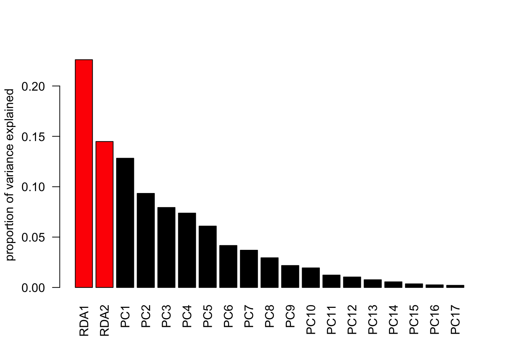

# Part 3
# Multivariate statistics
# Method 1: unconstrained ------------------------------------------------
## PCA
# we use the same dataset of flower characteristics of three species of iris
pairs(iris, col = iris$Species)
head(iris)
## Sepal.Length Sepal.Width Petal.Length Petal.Width Species
## 1 5.1 3.5 1.4 0.2 setosa
## 2 4.9 3.0 1.4 0.2 setosa
## 3 4.7 3.2 1.3 0.2 setosa
## 4 4.6 3.1 1.5 0.2 setosa
## 5 5.0 3.6 1.4 0.2 setosa
## 6 5.4 3.9 1.7 0.4 setosa
pca = prcomp(iris[, 1:4], scale = T) # always set scale = T
# when data is very skewed --> better transform e.g. log
summary(pca)
## Importance of components:
## PC1 PC2 PC3 PC4
## Standard deviation 1.7084 0.9560 0.38309 0.14393
## Proportion of Variance 0.7296 0.2285 0.03669 0.00518
## Cumulative Proportion 0.7296 0.9581 0.99482 1.00000
# standard deviation^2 is variance!!!
# cum prop of PC2 is the variance that is visualized in a biplot
# plot the result
# absolute variance of each component
plot(pca) # see row1 of the summary(pca): (sd)^2 = variance
# rel variance of each component
barplot(summary(pca)$importance[2, ],
ylab="proportion of variance explained") # displays % of variance explained by PCs
# Biplot
biplot(pca) # displays PC1 and PC2 AND rotation (vectors) of the different variables AND observations
## distance-based approach: NMDS
library(vegan)
## Loading required package: permute
## Loading required package: lattice
## This is vegan 2.6-4
?vegan
# community dataset for plants in dunes (included in vegan package):
data("dune")
str(dune) # display structure of the dataset
## 'data.frame': 20 obs. of 30 variables:
## $ Achimill: num 1 3 0 0 2 2 2 0 0 4 ...
## $ Agrostol: num 0 0 4 8 0 0 0 4 3 0 ...
## $ Airaprae: num 0 0 0 0 0 0 0 0 0 0 ...
## $ Alopgeni: num 0 2 7 2 0 0 0 5 3 0 ...
## $ Anthodor: num 0 0 0 0 4 3 2 0 0 4 ...
## $ Bellpere: num 0 3 2 2 2 0 0 0 0 2 ...
## $ Bromhord: num 0 4 0 3 2 0 2 0 0 4 ...
## $ Chenalbu: num 0 0 0 0 0 0 0 0 0 0 ...
## $ Cirsarve: num 0 0 0 2 0 0 0 0 0 0 ...
## $ Comapalu: num 0 0 0 0 0 0 0 0 0 0 ...
## $ Eleopalu: num 0 0 0 0 0 0 0 4 0 0 ...
## $ Elymrepe: num 4 4 4 4 4 0 0 0 6 0 ...
## $ Empenigr: num 0 0 0 0 0 0 0 0 0 0 ...
## $ Hyporadi: num 0 0 0 0 0 0 0 0 0 0 ...
## $ Juncarti: num 0 0 0 0 0 0 0 4 4 0 ...
## $ Juncbufo: num 0 0 0 0 0 0 2 0 4 0 ...
## $ Lolipere: num 7 5 6 5 2 6 6 4 2 6 ...
## $ Planlanc: num 0 0 0 0 5 5 5 0 0 3 ...
## $ Poaprat : num 4 4 5 4 2 3 4 4 4 4 ...
## $ Poatriv : num 2 7 6 5 6 4 5 4 5 4 ...
## $ Ranuflam: num 0 0 0 0 0 0 0 2 0 0 ...
## $ Rumeacet: num 0 0 0 0 5 6 3 0 2 0 ...
## $ Sagiproc: num 0 0 0 5 0 0 0 2 2 0 ...
## $ Salirepe: num 0 0 0 0 0 0 0 0 0 0 ...
## $ Scorautu: num 0 5 2 2 3 3 3 3 2 3 ...
## $ Trifprat: num 0 0 0 0 2 5 2 0 0 0 ...
## $ Trifrepe: num 0 5 2 1 2 5 2 2 3 6 ...
## $ Vicilath: num 0 0 0 0 0 0 0 0 0 1 ...
## $ Bracruta: num 0 0 2 2 2 6 2 2 2 2 ...
## $ Callcusp: num 0 0 0 0 0 0 0 0 0 0 ...
?dune
summary(dune) # display summary of the dataset (summary statistics for each variable)
## Achimill Agrostol Airaprae Alopgeni Anthodor
## Min. :0.0 Min. :0.0 Min. :0.00 Min. :0.00 Min. :0.00
## 1st Qu.:0.0 1st Qu.:0.0 1st Qu.:0.00 1st Qu.:0.00 1st Qu.:0.00
## Median :0.0 Median :1.5 Median :0.00 Median :0.00 Median :0.00
## Mean :0.8 Mean :2.4 Mean :0.25 Mean :1.80 Mean :1.05
## 3rd Qu.:2.0 3rd Qu.:4.0 3rd Qu.:0.00 3rd Qu.:3.25 3rd Qu.:2.25
## Max. :4.0 Max. :8.0 Max. :3.00 Max. :8.00 Max. :4.00
## Bellpere Bromhord Chenalbu Cirsarve Comapalu
## Min. :0.00 Min. :0.00 Min. :0.00 Min. :0.0 Min. :0.0
## 1st Qu.:0.00 1st Qu.:0.00 1st Qu.:0.00 1st Qu.:0.0 1st Qu.:0.0
## Median :0.00 Median :0.00 Median :0.00 Median :0.0 Median :0.0
## Mean :0.65 Mean :0.75 Mean :0.05 Mean :0.1 Mean :0.2
## 3rd Qu.:2.00 3rd Qu.:0.50 3rd Qu.:0.00 3rd Qu.:0.0 3rd Qu.:0.0
## Max. :3.00 Max. :4.00 Max. :1.00 Max. :2.0 Max. :2.0
## Eleopalu Elymrepe Empenigr Hyporadi Juncarti
## Min. :0.00 Min. :0.0 Min. :0.0 Min. :0.00 Min. :0.00
## 1st Qu.:0.00 1st Qu.:0.0 1st Qu.:0.0 1st Qu.:0.00 1st Qu.:0.00
## Median :0.00 Median :0.0 Median :0.0 Median :0.00 Median :0.00
## Mean :1.25 Mean :1.3 Mean :0.1 Mean :0.45 Mean :0.90
## 3rd Qu.:1.00 3rd Qu.:4.0 3rd Qu.:0.0 3rd Qu.:0.00 3rd Qu.:0.75
## Max. :8.00 Max. :6.0 Max. :2.0 Max. :5.00 Max. :4.00
## Juncbufo Lolipere Planlanc Poaprat Poatriv
## Min. :0.00 Min. :0.0 Min. :0.0 Min. :0.0 Min. :0.00
## 1st Qu.:0.00 1st Qu.:0.0 1st Qu.:0.0 1st Qu.:0.0 1st Qu.:0.00
## Median :0.00 Median :2.0 Median :0.0 Median :3.0 Median :4.00
## Mean :0.65 Mean :2.9 Mean :1.3 Mean :2.4 Mean :3.15
## 3rd Qu.:0.00 3rd Qu.:6.0 3rd Qu.:3.0 3rd Qu.:4.0 3rd Qu.:5.00
## Max. :4.00 Max. :7.0 Max. :5.0 Max. :5.0 Max. :9.00
## Ranuflam Rumeacet Sagiproc Salirepe Scorautu
## Min. :0.0 Min. :0.0 Min. :0 Min. :0.00 Min. :0.0
## 1st Qu.:0.0 1st Qu.:0.0 1st Qu.:0 1st Qu.:0.00 1st Qu.:2.0
## Median :0.0 Median :0.0 Median :0 Median :0.00 Median :2.0
## Mean :0.7 Mean :0.9 Mean :1 Mean :0.55 Mean :2.7
## 3rd Qu.:2.0 3rd Qu.:0.5 3rd Qu.:2 3rd Qu.:0.00 3rd Qu.:3.0
## Max. :4.0 Max. :6.0 Max. :5 Max. :5.00 Max. :6.0
## Trifprat Trifrepe Vicilath Bracruta Callcusp
## Min. :0.00 Min. :0.00 Min. :0.0 Min. :0.00 Min. :0.0
## 1st Qu.:0.00 1st Qu.:1.00 1st Qu.:0.0 1st Qu.:1.50 1st Qu.:0.0
## Median :0.00 Median :2.00 Median :0.0 Median :2.00 Median :0.0
## Mean :0.45 Mean :2.35 Mean :0.2 Mean :2.45 Mean :0.5
## 3rd Qu.:0.00 3rd Qu.:3.00 3rd Qu.:0.0 3rd Qu.:4.00 3rd Qu.:0.0
## Max. :5.00 Max. :6.00 Max. :2.0 Max. :6.00 Max. :4.0
NMDS = metaMDS(dune)
## Run 0 stress 0.1192678
## Run 1 stress 0.1886532
## Run 2 stress 0.1192678
## ... Procrustes: rmse 1.258026e-05 max resid 3.164268e-05
## ... Similar to previous best
## Run 3 stress 0.1183186
## ... New best solution
## ... Procrustes: rmse 0.02027014 max resid 0.06496123
## Run 4 stress 0.1183186
## ... Procrustes: rmse 4.230386e-06 max resid 1.475206e-05
## ... Similar to previous best
## Run 5 stress 0.1192678
## Run 6 stress 0.1809578
## Run 7 stress 0.1889638
## Run 8 stress 0.1808911
## Run 9 stress 0.3680059
## Run 10 stress 0.1183186
## ... Procrustes: rmse 1.16265e-05 max resid 3.451986e-05
## ... Similar to previous best
## Run 11 stress 0.1183186
## ... Procrustes: rmse 4.643335e-06 max resid 1.388314e-05
## ... Similar to previous best
## Run 12 stress 0.2361935
## Run 13 stress 0.1192679
## Run 14 stress 0.1192679
## Run 15 stress 0.1183186
## ... Procrustes: rmse 1.447333e-05 max resid 4.510486e-05
## ... Similar to previous best
## Run 16 stress 0.1192679
## Run 17 stress 0.1192678
## Run 18 stress 0.1192679
## Run 19 stress 0.1808911
## Run 20 stress 0.1808911
## *** Best solution repeated 4 times
# algorithm is iterative
NMDS # gives information on NMDS: distance measure, stress (should be low)
##
## Call:
## metaMDS(comm = dune)
##
## global Multidimensional Scaling using monoMDS
##
## Data: dune
## Distance: bray
##
## Dimensions: 2
## Stress: 0.1183186
## Stress type 1, weak ties
## Best solution was repeated 4 times in 20 tries
## The best solution was from try 3 (random start)
## Scaling: centring, PC rotation, halfchange scaling
## Species: expanded scores based on 'dune'
# stress of >= 0.2 = be suspicious, stress >=0.3 indicates that ordination is arbitrary
# increase Dimensions if k is too high
ordiplot(NMDS, type = "t") #"t" = text
# if we have time:
# distance measure can be changed (default is Bray-Curtis): see
?vegdist # some recommendations there
NMDS2 = metaMDS(dune, distance="euclidean")
## Run 0 stress 0.1174523
## Run 1 stress 0.1174523
## ... Procrustes: rmse 3.580249e-06 max resid 1.150625e-05
## ... Similar to previous best
## Run 2 stress 0.1174523
## ... Procrustes: rmse 2.054651e-06 max resid 3.818306e-06
## ... Similar to previous best
## Run 3 stress 0.1174523
## ... Procrustes: rmse 2.128171e-06 max resid 5.656827e-06
## ... Similar to previous best
## Run 4 stress 0.1174523
## ... Procrustes: rmse 2.022272e-06 max resid 6.26572e-06
## ... Similar to previous best
## Run 5 stress 0.1174523
## ... Procrustes: rmse 2.488733e-06 max resid 8.218602e-06
## ... Similar to previous best
## Run 6 stress 0.1177339
## ... Procrustes: rmse 0.01706434 max resid 0.05525565
## Run 7 stress 0.1174523
## ... New best solution
## ... Procrustes: rmse 1.353658e-06 max resid 2.894393e-06
## ... Similar to previous best
## Run 8 stress 0.1174523
## ... Procrustes: rmse 1.402024e-06 max resid 4.031045e-06
## ... Similar to previous best
## Run 9 stress 0.1174523
## ... Procrustes: rmse 2.805576e-06 max resid 7.787809e-06
## ... Similar to previous best
## Run 10 stress 0.1174523
## ... Procrustes: rmse 1.140971e-06 max resid 2.993735e-06
## ... Similar to previous best
## Run 11 stress 0.1177339
## ... Procrustes: rmse 0.0170643 max resid 0.05525551
## Run 12 stress 0.1174523
## ... Procrustes: rmse 1.964847e-06 max resid 5.765074e-06
## ... Similar to previous best
## Run 13 stress 0.1174523
## ... Procrustes: rmse 1.231263e-06 max resid 2.345061e-06
## ... Similar to previous best
## Run 14 stress 0.1174523
## ... Procrustes: rmse 1.05504e-06 max resid 2.45264e-06
## ... Similar to previous best
## Run 15 stress 0.1177339
## ... Procrustes: rmse 0.01706422 max resid 0.05525614
## Run 16 stress 0.1177339
## ... Procrustes: rmse 0.01706442 max resid 0.05525521
## Run 17 stress 0.1177339
## ... Procrustes: rmse 0.01706456 max resid 0.05525899
## Run 18 stress 0.1177339
## ... Procrustes: rmse 0.01706413 max resid 0.05525604
## Run 19 stress 0.1177339
## ... Procrustes: rmse 0.01706403 max resid 0.05525579
## Run 20 stress 0.1174523
## ... Procrustes: rmse 2.00709e-06 max resid 5.652376e-06
## ... Similar to previous best
## *** Best solution repeated 8 times
NMDS2
##
## Call:
## metaMDS(comm = dune, distance = "euclidean")
##
## global Multidimensional Scaling using monoMDS
##
## Data: dune
## Distance: euclidean
##
## Dimensions: 2
## Stress: 0.1174523
## Stress type 1, weak ties
## Best solution was repeated 8 times in 20 tries
## The best solution was from try 7 (random start)
## Scaling: centring, PC rotation
## Species: expanded scores based on 'dune'
ordiplot(NMDS2, type = "t")
# Method 2: constrained ------------------------------------------------
# 2 multivariate datasets (abundances + environment)
## RDA
str(dune) # species composition
## 'data.frame': 20 obs. of 30 variables:
## $ Achimill: num 1 3 0 0 2 2 2 0 0 4 ...
## $ Agrostol: num 0 0 4 8 0 0 0 4 3 0 ...
## $ Airaprae: num 0 0 0 0 0 0 0 0 0 0 ...
## $ Alopgeni: num 0 2 7 2 0 0 0 5 3 0 ...
## $ Anthodor: num 0 0 0 0 4 3 2 0 0 4 ...
## $ Bellpere: num 0 3 2 2 2 0 0 0 0 2 ...
## $ Bromhord: num 0 4 0 3 2 0 2 0 0 4 ...
## $ Chenalbu: num 0 0 0 0 0 0 0 0 0 0 ...
## $ Cirsarve: num 0 0 0 2 0 0 0 0 0 0 ...
## $ Comapalu: num 0 0 0 0 0 0 0 0 0 0 ...
## $ Eleopalu: num 0 0 0 0 0 0 0 4 0 0 ...
## $ Elymrepe: num 4 4 4 4 4 0 0 0 6 0 ...
## $ Empenigr: num 0 0 0 0 0 0 0 0 0 0 ...
## $ Hyporadi: num 0 0 0 0 0 0 0 0 0 0 ...
## $ Juncarti: num 0 0 0 0 0 0 0 4 4 0 ...
## $ Juncbufo: num 0 0 0 0 0 0 2 0 4 0 ...
## $ Lolipere: num 7 5 6 5 2 6 6 4 2 6 ...
## $ Planlanc: num 0 0 0 0 5 5 5 0 0 3 ...
## $ Poaprat : num 4 4 5 4 2 3 4 4 4 4 ...
## $ Poatriv : num 2 7 6 5 6 4 5 4 5 4 ...
## $ Ranuflam: num 0 0 0 0 0 0 0 2 0 0 ...
## $ Rumeacet: num 0 0 0 0 5 6 3 0 2 0 ...
## $ Sagiproc: num 0 0 0 5 0 0 0 2 2 0 ...
## $ Salirepe: num 0 0 0 0 0 0 0 0 0 0 ...
## $ Scorautu: num 0 5 2 2 3 3 3 3 2 3 ...
## $ Trifprat: num 0 0 0 0 2 5 2 0 0 0 ...
## $ Trifrepe: num 0 5 2 1 2 5 2 2 3 6 ...
## $ Vicilath: num 0 0 0 0 0 0 0 0 0 1 ...
## $ Bracruta: num 0 0 2 2 2 6 2 2 2 2 ...
## $ Callcusp: num 0 0 0 0 0 0 0 0 0 0 ...
data("dune.env")
str(dune.env) # environmental variables
## 'data.frame': 20 obs. of 5 variables:
## $ A1 : num 2.8 3.5 4.3 4.2 6.3 4.3 2.8 4.2 3.7 3.3 ...
## $ Moisture : Ord.factor w/ 4 levels "1"<"2"<"4"<"5": 1 1 2 2 1 1 1 4 3 2 ...
## $ Management: Factor w/ 4 levels "BF","HF","NM",..: 4 1 4 4 2 2 2 2 2 1 ...
## $ Use : Ord.factor w/ 3 levels "Hayfield"<"Haypastu"<..: 2 2 2 2 1 2 3 3 1 1 ...
## $ Manure : Ord.factor w/ 5 levels "0"<"1"<"2"<"3"<..: 5 3 5 5 3 3 4 4 2 2 ...
RDA = rda(dune ~ as.numeric(Manure) + as.numeric(Moisture),
data = dune.env)
plot(RDA)
summary(RDA)
##
## Call:
## rda(formula = dune ~ as.numeric(Manure) + as.numeric(Moisture), data = dune.env)
##
## Partitioning of variance:
## Inertia Proportion
## Total 84.12 1.0000
## Constrained 31.20 0.3709
## Unconstrained 52.92 0.6291
##
## Eigenvalues, and their contribution to the variance
##
## Importance of components:
## RDA1 RDA2 PC1 PC2 PC3 PC4 PC5
## Eigenvalue 19.0185 12.1864 10.7889 7.85393 6.67657 6.2084 5.12380
## Proportion Explained 0.2261 0.1449 0.1283 0.09336 0.07937 0.0738 0.06091
## Cumulative Proportion 0.2261 0.3709 0.4992 0.59255 0.67192 0.7457 0.80663
## PC6 PC7 PC8 PC9 PC10 PC11 PC12
## Eigenvalue 3.50320 3.10988 2.47760 1.83130 1.63276 1.03305 0.87265
## Proportion Explained 0.04164 0.03697 0.02945 0.02177 0.01941 0.01228 0.01037
## Cumulative Proportion 0.84827 0.88524 0.91469 0.93646 0.95587 0.96815 0.97852
## PC13 PC14 PC15 PC16 PC17
## Eigenvalue 0.642862 0.469072 0.301387 0.215853 0.177610
## Proportion Explained 0.007642 0.005576 0.003583 0.002566 0.002111
## Cumulative Proportion 0.986164 0.991740 0.995323 0.997889 1.000000
##
## Accumulated constrained eigenvalues
## Importance of components:
## RDA1 RDA2
## Eigenvalue 19.0185 12.1864
## Proportion Explained 0.6095 0.3905
## Cumulative Proportion 0.6095 1.0000
##
## Scaling 2 for species and site scores
## * Species are scaled proportional to eigenvalues
## * Sites are unscaled: weighted dispersion equal on all dimensions
## * General scaling constant of scores: 6.322924
##
##
## Species scores
##
## RDA1 RDA2 PC1 PC2 PC3 PC4
## Achimill -0.47851 0.09403 -0.235988 -0.3197353 0.3103983 -0.28427
## Agrostol 1.23296 -0.81601 0.315190 0.4660974 -0.5315336 -0.32248
## Airaprae 0.09460 0.19968 -0.076754 -0.0507504 0.2022189 0.36738
## Alopgeni 0.62089 -1.06991 -0.607808 0.4085202 -0.7675817 0.14890
## Anthodor -0.30489 0.37796 -0.285364 -0.7314654 0.3530155 0.28189
## Bellpere -0.35166 -0.06186 -0.191560 0.2159228 0.0656089 -0.21926
## Bromhord -0.40174 -0.11438 -0.328850 0.0020272 0.3311781 -0.38313
## Chenalbu 0.04451 -0.03993 -0.058797 -0.0133695 -0.0062794 0.01141
## Cirsarve -0.02004 -0.10831 0.015724 0.0909001 0.0063718 0.02241
## Comapalu 0.16471 0.14225 0.075038 0.0042984 0.0452944 -0.15780
## Eleopalu 1.06943 -0.01682 0.956570 -0.1633735 -0.0681172 -0.57630
## Elymrepe -0.46520 -0.51974 -0.379373 0.6613239 -0.0042671 -0.34204
## Empenigr 0.08235 0.07112 -0.057452 -0.0408164 0.1097807 0.19686
## Hyporadi 0.09461 0.32440 -0.082603 -0.0367101 0.3251675 0.62435
## Juncarti 0.65768 0.03291 0.308049 0.1056579 -0.2072807 -0.34406
## Juncbufo 0.17582 -0.14056 -0.532656 0.0587424 -0.4920012 0.08088
## Lolipere -1.37550 -0.76492 0.066647 0.0244836 0.5992907 -0.19415
## Planlanc -0.91473 0.29200 0.034350 -0.8292224 -0.1507798 -0.02191
## Poaprat -0.79237 -0.54275 -0.258875 0.2664459 0.2614175 -0.18998
## Poatriv -0.31279 -1.25438 -1.230700 -0.1907205 -0.2493570 -0.49014
## Ranuflam 0.59648 0.04493 0.299763 -0.0445985 -0.0309806 -0.25792
## Rumeacet -0.49744 -0.03945 -0.219023 -0.8330211 -0.5462675 -0.10570
## Sagiproc 0.26038 -0.27567 -0.367494 0.2918690 -0.1864142 0.53458
## Salirepe 0.20256 0.44038 0.242168 0.1056696 -0.0521776 0.24572
## Scorautu -0.30711 0.52183 -0.365094 -0.0004242 0.1648603 0.30468
## Trifprat -0.35833 -0.03560 0.006885 -0.6508879 -0.2073384 -0.06693
## Trifrepe -0.23813 0.30248 -0.700492 -0.2593107 0.1604908 -0.54832
## Vicilath -0.13798 0.12689 0.043562 0.0653852 0.0278102 0.03656
## Bracruta -0.07231 0.35720 0.477998 -0.2964003 -0.7549203 0.23978
## Callcusp 0.42177 0.12915 0.374847 -0.0305725 0.0002153 -0.33309
##
##
## Site scores (weighted sums of species scores)
##
## RDA1 RDA2 PC1 PC2 PC3 PC4
## 1 -1.20433 -0.66993 1.9859 1.074660 2.0108 0.8005
## 2 -1.63761 -1.22512 -1.8071 1.724159 1.1211 -2.1875
## 3 -0.41325 -2.98426 -0.3938 1.380869 -0.1922 0.1239
## 4 0.09600 -2.56866 0.3143 1.817064 0.1274 0.4481
## 5 -1.79219 0.23179 -0.7176 -1.888869 -0.8907 -0.7317
## 6 -2.29807 0.77565 0.2429 -3.590960 -1.4197 -0.2869
## 7 -2.04152 -0.05247 0.2480 -2.144774 0.2954 0.1111
## 8 1.11426 -1.42188 0.1640 -0.499303 0.9258 -0.0638
## 9 0.17152 -1.55487 -2.1156 1.667963 -1.4793 -1.2478
## 10 -2.05972 0.47751 -1.4807 -1.049874 2.3911 -1.6675
## 11 -1.41282 1.17178 1.0315 1.096567 0.2632 1.2017
## 12 1.40040 -1.21998 -1.5692 0.392422 -3.3976 1.6584
## 13 1.21063 -2.23426 -2.3507 -0.534503 -0.2510 0.4563
## 14 1.68764 1.47758 0.1848 -0.008859 1.1639 -2.1575
## 15 1.93732 1.38809 1.3152 0.094782 -0.2584 -0.9969
## 16 3.10493 -0.43010 2.8191 -0.847596 -0.8985 -0.7305
## 17 -0.01732 2.06719 0.1884 0.209376 0.7506 1.4412
## 18 -0.62775 2.16502 1.1592 1.470799 -1.8057 0.7257
## 19 0.37978 2.98990 -1.1484 -0.815907 2.1945 3.9351
## 20 2.40211 1.61704 1.9299 0.451985 -0.6505 -0.8317
##
##
## Site constraints (linear combinations of constraining variables)
##
## RDA1 RDA2 PC1 PC2 PC3 PC4
## 1 -1.5128 -1.9466 1.9859 1.074660 2.0108 0.8005
## 2 -1.6016 0.0654 -1.8071 1.724159 1.1211 -2.1875
## 3 -0.4006 -2.1652 -0.3938 1.380869 -0.1922 0.1239
## 4 -0.4006 -2.1652 0.3143 1.817064 0.1274 0.4481
## 5 -1.6016 0.0654 -0.7176 -1.888869 -0.8907 -0.7317
## 6 -1.6016 0.0654 0.2429 -3.590960 -1.4197 -0.2869
## 7 -1.5572 -0.9406 0.2480 -2.144774 0.2954 0.1111
## 8 1.7795 -1.5963 0.1640 -0.499303 0.9258 -0.0638
## 9 0.5784 0.6343 -2.1156 1.667963 -1.4793 -1.2478
## 10 -0.5338 0.8529 -1.4807 -1.049874 2.3911 -1.6675
## 11 -1.6461 1.0714 1.0315 1.096567 0.2632 1.2017
## 12 0.6228 -0.3717 -1.5692 0.392422 -3.3976 1.6584
## 13 1.7795 -1.5963 -2.3507 -0.534503 -0.2510 0.4563
## 14 1.6462 1.4218 0.1848 -0.008859 1.1639 -2.1575
## 15 1.6462 1.4218 1.3152 0.094782 -0.2584 -0.9969
## 16 1.7795 -1.5963 2.8191 -0.847596 -0.8985 -0.7305
## 17 -0.5783 1.8589 0.1884 0.209376 0.7506 1.4412
## 18 -1.6905 2.0774 1.1592 1.470799 -1.8057 0.7257
## 19 1.6462 1.4218 -1.1484 -0.815907 2.1945 3.9351
## 20 1.6462 1.4218 1.9299 0.451985 -0.6505 -0.8317
##
##
## Biplot scores for constraining variables
##
## RDA1 RDA2 PC1 PC2 PC3 PC4
## as.numeric(Manure) -0.1928 -0.98124 0 0 0 0
## as.numeric(Moisture) 0.9990 0.04412 0 0 0 0
# important part at the top
# variance explained by the two variables = prop constrained = 37.09%
# how much is explained by each RDA = see importance of components prop explained
# PCs are the unconstrained axes
# species scores = coordinates of species in the plot
# site scores = coordinates of sites in the plot
# biplot scores = coordinates of environmental variable vectors
barplot(summary(RDA)$cont$importance[2, ], las = 2,
col = c(rep ('red', 2),
rep ('black', length(summary(RDA)$cont$importance[2, ])-2)),
ylab="proportion of variance explained") # displays % of variance explained by PCs
# Method 3: Clustering ---------------------------------------------------
# hierarchical clustering:
library(cluster) # clustering
library(ape) # phylogenetic analyses, here to get pretty dendrogram
# example for distance matrix
dist(iris[1:3, 1:4]) # creates a distance matrix (comparison of all possible sample pairs),
## 1 2
## 2 0.5385165
## 3 0.5099020 0.3000000
# default method ="euclidean", but can be changed
# get Hierarchical Clustering
hc = hclust(dist(iris[, 1:4]))
plot(hc)
# for colors use package ape
plot(as.phylo(hc), tip.color = as.numeric(iris$Species)) # as.phylo converts object type "hcclust" into object type "phylo"# change plotting type:
plot(as.phylo(hc), tip.color = as.numeric(iris$Species), type = "fan")
# lets try another clustering algorithm
data(animals)
str(animals)
## 'data.frame': 20 obs. of 6 variables:
## $ war: int 1 1 2 1 2 2 2 2 2 1 ...
## $ fly: int 1 2 1 1 1 1 2 2 1 2 ...
## $ ver: int 1 1 2 1 2 2 2 2 2 1 ...
## $ end: int 1 1 1 1 2 1 1 2 2 1 ...
## $ gro: int 2 2 1 1 2 2 2 1 2 1 ...
## $ hai: int 1 2 2 2 2 2 1 1 1 1 ...
# Agglomerative Nesting
aa <- agnes(animals)
plot(aa, which.plots = 2) #which.plots: plots only plot 2
# first is banner plot...
### non-hierarchical
# kmeans
set.seed(123) # choice of first k centers is random and depends on (random) seed
cl = kmeans(iris[, 1:4], centers = 3) # centers = number of clusters to be generated
cl$cluster
## [1] 1 1 1 1 1 1 1 1 1 1 1 1 1 1 1 1 1 1 1 1 1 1 1 1 1 1 1 1 1 1 1 1 1 1 1 1 1
## [38] 1 1 1 1 1 1 1 1 1 1 1 1 1 2 2 3 2 2 2 2 2 2 2 2 2 2 2 2 2 2 2 2 2 2 2 2 2
## [75] 2 2 2 3 2 2 2 2 2 2 2 2 2 2 2 2 2 2 2 2 2 2 2 2 2 2 3 2 3 3 3 3 2 3 3 3 3
## [112] 3 3 2 2 3 3 3 3 2 3 2 3 2 3 3 2 2 3 3 3 3 3 2 3 3 3 3 2 3 3 3 2 3 3 3 2 3
## [149] 3 2
as.numeric(iris$Species)
## [1] 1 1 1 1 1 1 1 1 1 1 1 1 1 1 1 1 1 1 1 1 1 1 1 1 1 1 1 1 1 1 1 1 1 1 1 1 1
## [38] 1 1 1 1 1 1 1 1 1 1 1 1 1 2 2 2 2 2 2 2 2 2 2 2 2 2 2 2 2 2 2 2 2 2 2 2 2
## [75] 2 2 2 2 2 2 2 2 2 2 2 2 2 2 2 2 2 2 2 2 2 2 2 2 2 2 3 3 3 3 3 3 3 3 3 3 3
## [112] 3 3 3 3 3 3 3 3 3 3 3 3 3 3 3 3 3 3 3 3 3 3 3 3 3 3 3 3 3 3 3 3 3 3 3 3 3
## [149] 3 3
# without the same seed you may have to exchange cluster 2 and 3 to be able to compare assignment to species with real species in the plot
temp = cl$cluster
# temp[cl$cluster==2] = 3
# temp[cl$cluster==3] = 2
temp
## [1] 1 1 1 1 1 1 1 1 1 1 1 1 1 1 1 1 1 1 1 1 1 1 1 1 1 1 1 1 1 1 1 1 1 1 1 1 1
## [38] 1 1 1 1 1 1 1 1 1 1 1 1 1 2 2 3 2 2 2 2 2 2 2 2 2 2 2 2 2 2 2 2 2 2 2 2 2
## [75] 2 2 2 3 2 2 2 2 2 2 2 2 2 2 2 2 2 2 2 2 2 2 2 2 2 2 3 2 3 3 3 3 2 3 3 3 3
## [112] 3 3 2 2 3 3 3 3 2 3 2 3 2 3 3 2 2 3 3 3 3 3 2 3 3 3 3 2 3 3 3 2 3 3 3 2 3
## [149] 3 2
as.numeric(iris$Species)
## [1] 1 1 1 1 1 1 1 1 1 1 1 1 1 1 1 1 1 1 1 1 1 1 1 1 1 1 1 1 1 1 1 1 1 1 1 1 1
## [38] 1 1 1 1 1 1 1 1 1 1 1 1 1 2 2 2 2 2 2 2 2 2 2 2 2 2 2 2 2 2 2 2 2 2 2 2 2
## [75] 2 2 2 2 2 2 2 2 2 2 2 2 2 2 2 2 2 2 2 2 2 2 2 2 2 2 3 3 3 3 3 3 3 3 3 3 3
## [112] 3 3 3 3 3 3 3 3 3 3 3 3 3 3 3 3 3 3 3 3 3 3 3 3 3 3 3 3 3 3 3 3 3 3 3 3 3
## [149] 3 3
# original species
pairs(iris[, 1:4], col = as.numeric(iris$Species)) 
# species found by cluster
pairs(iris[, 1:4], col = temp)
# display samples that have been assigned to the wrong species
same = as.numeric(iris$Species) == temp
pairs(iris[, 1:4], col = as.numeric(same) + 1) palette()
## [1] "black" "#DF536B" "#61D04F" "#2297E6" "#28E2E5" "#CD0BBC" "#F5C710"
## [8] "gray62"
# HERE EXERCISE WITH BREAKOUT SESSION
# Attention ---------------------------------------------------------------
##### type (or copy) the following while students work on their exercise
# Why we should be careful when interpreting patterns in ordination plots
set.seed(123)
random = data.frame(pollution = rnorm(30),
temperature = rnorm(30),
moisture = rnorm(30),
tourists = rnorm(30),
wind = rnorm(30),
dogs = rnorm(30))
head(random)
## pollution temperature moisture tourists wind dogs
## 1 -0.56047565 0.4264642 0.3796395 0.9935039 0.1176466 0.7877388
## 2 -0.23017749 -0.2950715 -0.5023235 0.5483970 -0.9474746 0.7690422
## 3 1.55870831 0.8951257 -0.3332074 0.2387317 -0.4905574 0.3322026
## 4 0.07050839 0.8781335 -1.0185754 -0.6279061 -0.2560922 -1.0083766
## 5 0.12928774 0.8215811 -1.0717912 1.3606524 1.8438620 -0.1194526
## 6 1.71506499 0.6886403 0.3035286 -0.6002596 -0.6519499 -0.2803953
pca = prcomp(random, scale = T)
biplot(pca)
summary(pca) # similar variance on all axes
## Importance of components:
## PC1 PC2 PC3 PC4 PC5 PC6
## Standard deviation 1.2054 1.1078 1.0649 0.9707 0.8530 0.71817
## Proportion of Variance 0.2422 0.2046 0.1890 0.1570 0.1213 0.08596
## Cumulative Proportion 0.2422 0.4467 0.6357 0.7928 0.9140 1.00000